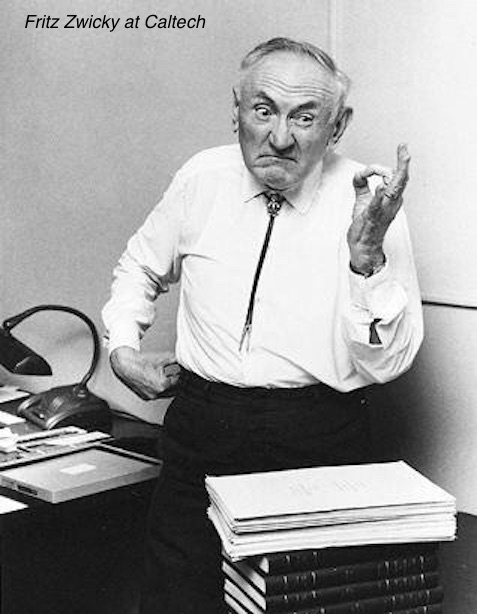
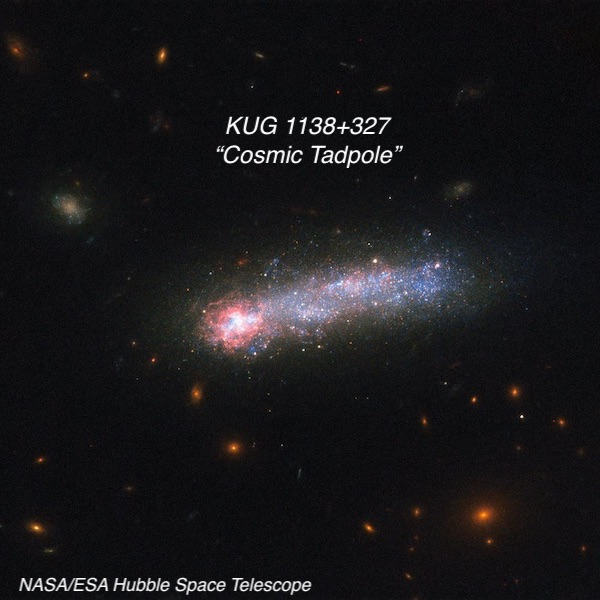
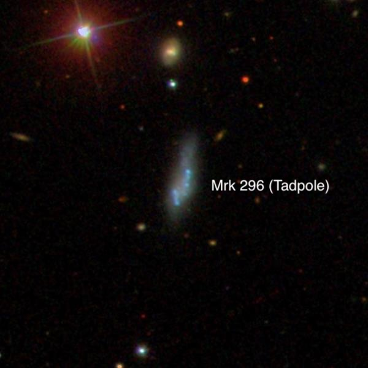
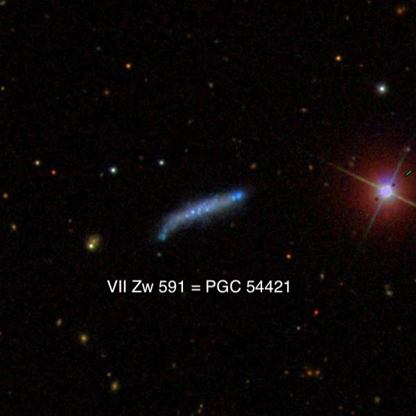
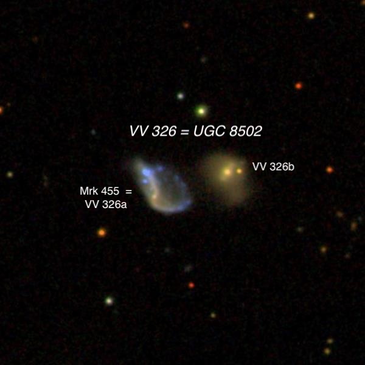
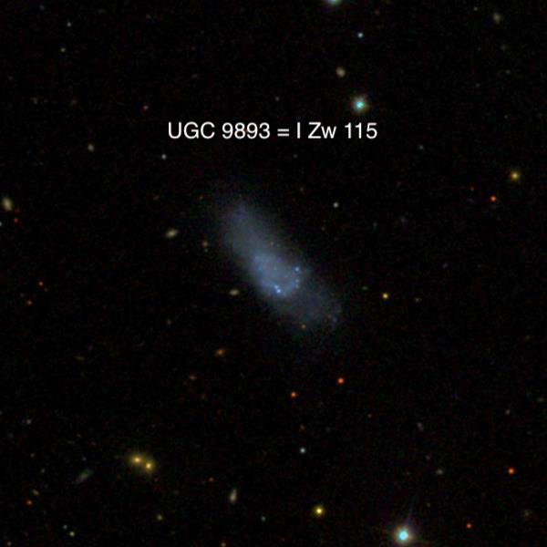
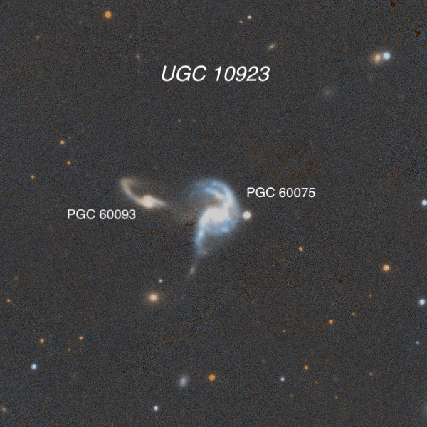
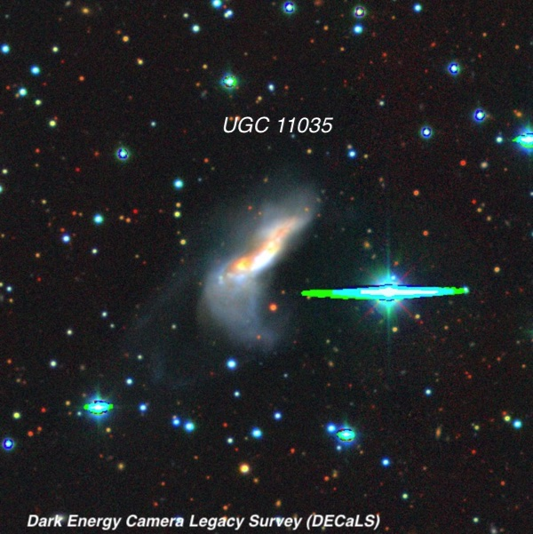
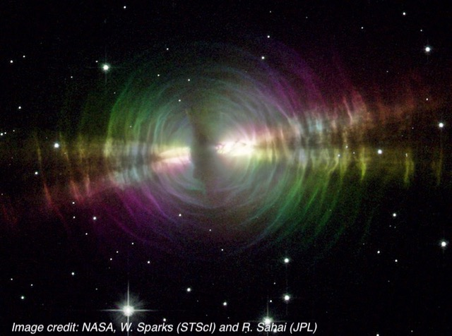

A couple of nights with Fritz Zwicky
I observed twice at Lake Sonoma this new moon window, though I’m combining these into a single report featuring Fritz Zwicky. On Tuesday June 16th, I observed with Dan Smiley and Ray Cash at our regular Lone Rock lot along Rockpile Road. The transparency was good but the seeing poor and we had occasional gusts all night. As a result I had to limit magnifications to 260x, instead of 375x-450x that I often use on small galaxies. And the various galaxies highlighted below are all quite small.
I returned again on Sunday, June 21th, to met Bob Douglas, Jim Molinari and his friend Jeff. Our quartet had quite a bit of glass — Bob had his 28” Starstructure, I was using my 24” Starstructure, Jim had a 22” Obsession UC and Jeff an 18” classic Obsession. A few other amateurs pulled into the lot while it was getting dark though I didn’t go over to their scopes, so I don’t know their names. On the second night conditions were much better: warm (no jacket/hat/gloves), completely calm, much better seeing (I cleanly split the 0.6” double star STF 2244 in Ophiuchus (mag 6.6/6.9) and good transparency (faintest galaxy observed ~16.5).
On both nights I focused on observing compact galaxies catalogued by the brilliant, but combative astrophysicist Fritz Zwicky. His remarkable paper in 1933 titled “ The Redshift of Extragalactic Nebulae ” provided the first evidence of dark matter (called “dunkle Materie”). His conclusion was based on the velocities of 7 galaxies in the Coma Galaxy Cluster, which he used to estimate the mass of the cluster using the “virial theorem". His calculations showed the mass was 400x greater than expected from the luminous matter. He concluded “dark matter exists in much greater density than luminous matter.” Of course, his proposal of dark matter was ahead of his time and ignored as preposterous. In 1937 he predicted the formation of images from gravitational lensing of distant "extragalactic nebulae" by nearer galaxies along the same line of sight. The first example was not discovered until 1979, five years after his death.
He followed up with a famous paper co-authored with William Baade in 1934 . Zwicky and Baade proposed that “supernova” explosions “represent the transition of an ordinary star into a neutron star, consisting mainly of neutrons” (neutrons having been identified by James Chadwick just two years earlier in 1932). Furthermore, Zwicky argued that supernovae were the source of cosmic rays (a completely mysterious phenomenon). It would take several decades before the first neutron star would be confirmed as Zwicky and Baade predicted.
Zwicky was famously cantankerous, referring to colleagues at Mount Wilson as “spherical bastards” (bastards no matter which side you looked at them). Several of the objects on my observing list were from Zwicky's “ Catalogue of Selected Compact Galaxies and of Post-Eruptive Galaxies ” (compiled in the 1960s) and have designations like VII Zw 591 (described below). In the introduction to this self-published catalogue, Zwicky went on a ballastic rant against several of his peers, accusing Alan Sandage and William Baade of plagiarism, calling Henry Norris Russell “a shining example of a most deluded individual”, and Edwin Hubble of doctoring his observational data.
Steve Gottlieb


KUG 1138+327 = PGC 36252/36254 11 41 07.5 +32 25 37; Ursa Major V = 15.6; Size 0.6’ x 0.2'; PA = 98°
This striking galaxy was discovered by Anthony Wasilewski in 1983 and reported in the paper "The space density and spectroscopic properties of a new sample of emission-line galaxies”. He described it as a "Bright elongated patch with two knots. Eastern knot is the emitter.”
KUG 1138+327 (Kiso Ultaviolet Galaxy) is an excellent example of a “Tadpole Galaxy”, a subclass of Blue Compact Dwarfs (BCDs) with a giant star-forming region at the end of an elongated tail with weak star formation. Vassar astronomer Debra Elmegreen has studied these galaxies and noted that although tadpoles were relatively common in the early Universe, "they are rare in the local universe, where only 0.2% of the 10,000 galaxies in the Kiso Survey of UV Bright Galaxies are tadpoles.” In a 2012 paper, she reported "Tadpole structure could have a variety of origins. Some tadpoles could be edge-on disks with a single massive star-forming region at one end. Elmegreen & Elmegreen (2010) showed lopsided ring-like galaxies that would look like tadpoles if viewed edge-on. Tadpoles could also result from mergers like the famous case of UGC 10214 , which is called the Tadpole Galaxy. Another example is II Zw 40 . However, Campos-Aguilar et al. (1993) suggest that blue compact dwarf galaxies tend to be relatively isolated, so the tadpole shapes among these may not generally be mergers.”
She led a study in 2016 titled "Hubble Space Telescope Observations of Accretion-Induced Star Formation in the Tadpole Galaxy Kiso 5639”. The study found "The tadpole galaxy…has a slowly rotating disk with a drop in metallicity at its star-forming head, suggesting that star formation was triggered by the accretion of metal-poor gas…The head has a mass in young stars of 1 million Solar masses.” The study suggested "Motion through a reservoir of [primordial] H I gas) could cause the accretion and promote star formation on the leading edge of the dwarf, as might have happened for 30 Doradus in the Large Magellanic Cloud”. The spectacular HST image above is from this study.
Visually through my 24” at 375x, the galaxy was seen as a faint, thin, low surface brightness streak oriented east-west and about 20”x6” in size. The slightly brighter knot at the east end was barely non-stellar). Backing down to 225x, the Tadpole’s “head" was obvious and more prominent than the main body extending west. There seemed to be a slight contrast improvement when I added a broadband DGM galaxy filter. A mag 12.2 star is just 45" southwest and a mag 10 star is 3.8’ west-southwest.

Mrk 296 = KUG 1601+192 = PGC 56870 16 03 26.5 +19 09 46; Hercules V = 15.4; Size 0.75’ x 0.25'; PA = 163°
Markarian 296 (KUG 1601+192) is another Blue Compact Dwarf (BCD) that Elmegreen et al described as one of the two brightest "Tadpole” galaxies in the 2012 paper "Local Tadpole Galaxies”. Instead of single giant star-forming region, this tadpole has an irregular outline and consists of two strings of blue knots. The study noted that "[Mrk 296] has a massive head with many smaller clumps over a large region, which at high redshift would appear as one or perhaps two large clumps.”
This tadpole lies in Western Hercules, just 1.5° north of the Hercules Galaxy Cluster ( AGC 2151 ). But it lies in the foreground at a distance of 210 million light years, half as far as the Hercules cluster. Using 225x and 260x, it appeared faint, very elongated 3:1 ~N-S, roughly 24”x8”. The surface brightness was low and I was unable to detect any knots, which must have a low contrast. A 12th magnitude star (at the edge of this image) is 1.5' northeast.

VII Zw 591 = The “Blue Sausage" 15 15 04.0 +61 12 12; Draco V = 15.1; Size 1.0’ x 0.2'; PA = 113°
This Zwicky galaxy caught my attention as it appears to be another Tadpole galaxy with a small blue head on the west end, though it wasn’t studied by Elmegreen. It was first catalogued by the Russian astronomer Boris Vorontsov-Velyaminov, who noted it was possibly a triple system (based on the POSS1 appearance). In 1968 it caught the attention of Caltech astronomer Fritz Zwicky, who called it a "Very blue sausage shaped compact”. The bright star on the right edge of this SDSS image is 11th magnitude.
VII Zw 591 (the 591st object in Zwicky’s 7th list of compact galaxies) is located 2.6° northwest of 3.3-magnitude Iota Draconis. I found a fairly faint, very thin edge-on WNW-ESE, ~45” x 10”. The galaxy had an irregular surface brightness (patchy) and no core. I wasn’t able to clearly resolve any individual knots, just a mottled appearance.

VV 326 = UGC 8502 (Pair of galaxies) 13 30 38.0 +31 17 07; Canes Venatici Total size 1.0’ x 0.5’; V = 14.5 and V = 15.1
Most sources identify object as a pair of galaxies, but the deformed eastern galaxy ( VV 326a ), which isbrightest along a sickle-shaped outline, may be an interacting pair itself, with blue knot at the north end a secondary nucleus. This eastern starburst galaxy was catalogued by Benjamin Markarian as Mrk 455 , due to its ultraviolet spectrum. The two main objects have identical redshift (z = .034), implying a light-travel time of 465 million years and they are found in Canes Venatici, 3.8° northwest of M3
The pair (separated by 0.6’) was easily resolved at 375x. VV 326b , the western galaxy, appeared faint, slightly elongated, about 18" diameter. VV 326a, the eastern galaxy, appeared slightly brighter, elongated 5:2 ~N-S, ~25” x 10”. It contained a bright core or knot. Interestingly, there’s another unusual galaxy, VV 69 = UGC 8496, just 5’ northwest. This appears to be a merging pair of blue dwarfs, though it lies in the foreground of VV 326 at half the redshift.

I Zw 115 15 32 57.3 +46 27 10; Bootes V = 14.7; Size 1.2’ x 0.4'; PA = 46°
I Zw 115 is a nearby (~33 million light years, based on the Tully-Fischer method) dwarf in eastern Bootes. Zwicky found it on the POSS1 and called it a “blue post-eruptive galaxy with several compact knots on central disk.” The SDSS shows an unusual rectangular shape with a brighter central region contains several blue knots and two wings, like a strange celestial moth. The galaxy’s physical dimensions are roughly 11 million l.y. by 3.5 million l.y.
At 260x, VV 720 was moderately faint, very elongated SW-NE ~0.6'x0.2', no nucleus. The outer extensions had a very low surface brightness. A wide pair (~35") of mag 11 stars lies 4’ west-northwest.

VII Zw 729 = UGC 10923 = VV 706 17 19 30.8 +86 44 18; Ursa Minor V = 13.4; Size 1.2’ x 0.6'; Surf Br = 12.9
This interacting Zwicky pair (VII Zw 729) is located just 14’ northwest of 4.4-magnitude Delta (23) Ursa Minoris and just 3° from the north celestial pole! In Zwicky’s distinctive style of describing disturbed galaxies, he called this a "Post-eruptive blue pair of disrupted spirals, with distorted arms, jets and several red and blue faint compact knots in field”. The red eastern galaxy is an ultra-luminous infrared galaxy with the pair included in the 2004 study "Optical Imaging of Very Luminous Infrared Galaxy Systems: Photometric Properties and Late Evolution”: "Two galaxies in interaction separated by 42" (44 kpc). The largest is a face-on spiral rotating clockwise. The northern arm connects with the smaller galaxy. The other spiral arm extends toward the south where a patchy structure (dwarf galaxy?) is clearly visible in the three filters."
Using a variety of magnifications (225x, 260x and 375x) the brighter western galaxy ( PGC 60075 ) was fairly faint, roughly oval 3:2 north-south, maybe 35"x25", weak concentration but no distinct core, irregular surface brightness. PGC 60093 , just 45” east, was barely visible as an extremely faint and small glow, 10" diameter (probably the core). The duo lies at a distance of some 350 million l.y.

UGC 11035 = Zwicky 1752.6+3253 17 54 29.4 +32 53 14; Hercules Size 1.6’ x 0.7'; PA = 140°
UGC 11035 was included in Zwicky's “Catalogue of Selected Compact Galaxies and of Post-Eruptive Galaxies” and called a "Blue post-eruptive chain of compacts, (with) extended plumes.” UGC 11035 is a mid-to-advanced stage major merger (ultra-luminous in the infrared) with two nuclei. The extended tidal plumes to the south is evidence of the gravitational interaction, along with the unusual distorted shape of the main body. A 2019 multi-wavelength investigation including HST images showed the two nuclei have a separation of ~8500 parsecs. Huge regions display ongoing star-formation at a rate of ~10 to 30 Solar masses per year.
The galaxy appeared moderately faint and quite elongated 3:1 northwest-southeast, with a length of 1’. The main body had an unusual bowed or banana shape, concave outwards towards the west and the core seemed offset towards the northwest side. This galaxy in situated in a rich eastern Hercules star field with a 10.5-magnitude star 1.3’ west.

Egg Nebula = IV Zw 67 = CRL 2688 21 02 18.8 +36 41 41; Cygnus V = ~12.0; Size 24" x 6”
The Egg Nebula is the prototype of a pre-planetary nebula (PPN); a star caught in the very brief stage between the Asymptotic Giant Branch (AGB) and a Planetary Nebula (PN). The Egg Nebula has an interesting discovery history. Surprisingly, Fritz Zwicky discovered it on the POSS1 around 1966 and included it in his 4th list of compact galaxies (the objects were selected solely on their photographic appearance). He described IV Zw 67 as a "pair of blue fuzzy oval compacts”. Because of Zwicky’s error, it was included in the Uppsala Catalogue of Galaxies as UGC 11668 .
The Air Force Cambridge Research Laboratories independently discovered the Egg Nebula during a rocket-borne infrared sky survey conducted in 1971-72 and it was catalogued it again as Cambridge Research Lab (CRL) 2688. A follow-up investigation, using infrared, optical and radio observations, revealed a dusty reflection nebula with a highly polarized optical emission. Based on its roughly oval shape on the POSS1, one of the original researchers (Mike Merrill) dubbed it the “Egg Nebula”. A 2003 study detected NaCl in the circumstellar shell, so a more accurate nickname is the “Salty Egg Nebula”.
In good seeing I observed the Egg Nebula at 375x, 500x and finally 1000x, though even at 200x the two bipolar lobes were immediately evident. This is a small object and could be easily passed over as an out-of-focus double star. The two components combined are elongated SSW-NNE and span roughly 24” x 8". The NNE lobe is both brighter and larger with a very high surface brightness. It appeared roughly oval, ~10” x 7" SSW-NNE and rounded on its south end. At 1000x a low surface brightness extension or "fan" was visible extending further north. A dark gap separates the SSW component, which was fainter and only ~5" diameter
As roughly 50% of the light is polarized I brought along a polarizing filter to test if I could see it visually dim or disappear by rotating the filter in the proper orientation. I plopped the 1.25" filter directly on top of my 10mm and 6mm Zeiss Abbe Orthoscopic (ZAO) eyepieces. Holding the rim of the filter, I slowly rotated it using my thumb and index finger while peering through the filter. Sure enough, the brightness dimmed significantly (perhaps 1-1.5 magnitudes). A 12th magnitude star just 1.4' WNW was a convenient reference to gauge the dimming as it was comparable in brightness to the brighter component of the Egg. Although the fainter southern lobe never disappeared, at minimum transmission it shrunk down to a nearly stellar point.